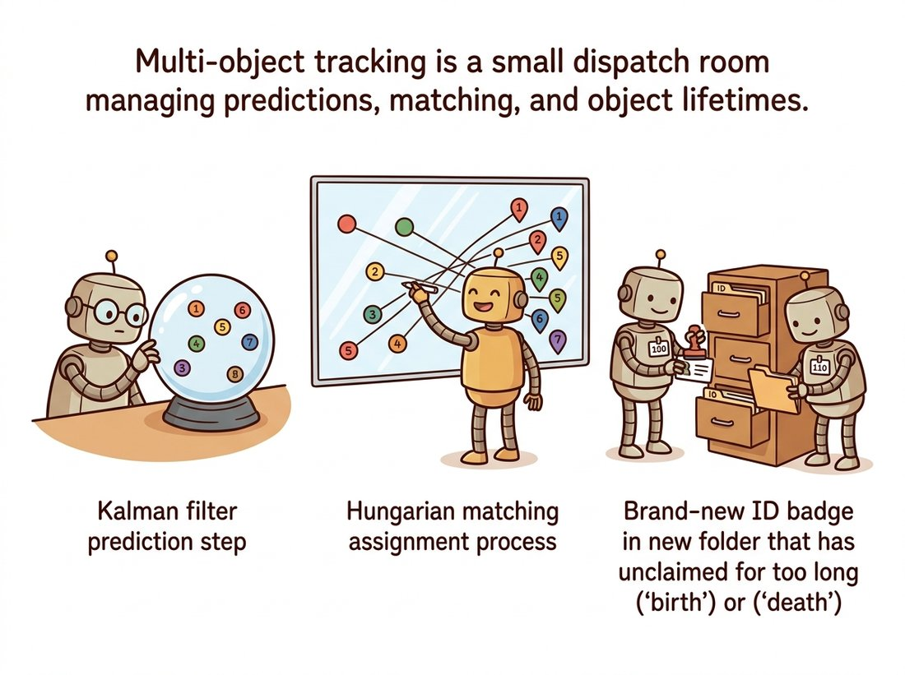

"Give me where you think it is, and I will tell you where it actually is, weighted by exactly how much I trust each of you. I am not guessing. I am performing optimal Bayesian inference. Loudly."
A Kalman Filter With Justified Confidence
A tracker that only believes its latest measurement jitters and dies in occlusion; a tracker that maintains a predicted state with uncertainty rides through noise and brief disappearances, and lets you follow many objects at once. This section adds two ideas that turn the frame-to-frame trackers of Section 15.5 into a robust multi-object system. The Kalman filter is the optimal recursive estimator for a linear system under Gaussian noise: it keeps a belief about each object's state (position and velocity), predicts forward by physics, then corrects with each measurement, blending the two by their relative certainties. Data association answers the multi-object question the filter cannot: given this frame's detections and last frame's predicted tracks, which measurement belongs to which object? The Hungarian algorithm solves that assignment optimally, and SORT, the combination of a constant-velocity Kalman filter with Hungarian matching on detection boxes, is the lightweight multi-object tracker that still anchors production pipelines in 2026.

The appearance trackers of the previous section follow one object by what it looks like, and they have no principled way to handle the moment the object is hidden or to manage several objects at once. This section supplies both missing pieces. First, a motion model that carries a track through gaps by predicting where the object should be, with a calibrated sense of how uncertain that prediction is. Second, an assignment procedure that, every frame, hands each new detection to the right existing track. Together they form the classical backbone of multi-object tracking (MOT), and they connect this chapter directly to the state-estimation thread that the world models of Chapter 36 later learn rather than hand-specify.
1. State, Prediction, and the Kalman Cycle Intermediate
Model a tracked object by a hidden state vector. For a point moving in the image plane, a natural choice is position and velocity, $\mathbf{x} = [p_x, p_y, v_x, v_y]^\top$. We never observe the state directly; we observe a noisy measurement (a detection's center) $\mathbf{z} = [p_x, p_y]^\top$. The Kalman filter maintains a Gaussian belief over the state, summarized by a mean $\hat{\mathbf{x}}$ and a covariance $P$ (the uncertainty ellipse); the multivariate Gaussian, its covariance matrix, and the Bayesian update that fuses two such beliefs are reviewed in Appendix A if they are rusty. A covariance matrix simply records how uncertain each state component is and how the components' errors correlate. Two matrices define the dynamics: the transition $F$ advances the state by one time step under constant-velocity physics, and the measurement $H$ extracts the observable part (position) from the state.
$$ F = \begin{bmatrix} 1 & 0 & \Delta t & 0 \\ 0 & 1 & 0 & \Delta t \\ 0 & 0 & 1 & 0 \\ 0 & 0 & 0 & 1 \end{bmatrix}, \qquad H = \begin{bmatrix} 1 & 0 & 0 & 0 \\ 0 & 1 & 0 & 0 \end{bmatrix}. $$
The filter runs a two-step cycle each frame that compresses to three words: predict by physics, correct by surprise. The predict step pushes the belief forward by the physics and inflates its uncertainty by the process noise $Q$ (how much real motion departs from constant velocity):
$$ \hat{\mathbf{x}}^- = F \hat{\mathbf{x}}, \qquad P^- = F P F^\top + Q. $$
The transition matrix $F$ encodes constant-velocity physics, so it is natural to conclude that this filter only works on objects that actually move at a constant velocity and breaks on anything that accelerates, turns, or stops. That is wrong, and the reason is the process noise $Q$. Constant velocity is the filter's nominal prediction, not a claim about the true motion; $Q$ is precisely the budget for how far real motion is allowed to depart from that prediction each frame. A pedestrian who suddenly changes direction violates constant velocity for one frame, the prediction misses, and the next measurement (admitted because $Q$ kept the predicted uncertainty wide enough) snaps the estimate back. The genuine failure mode is not maneuvering itself but a $Q$ set too small for the maneuvering present: the filter then trusts its straight-line prediction too much, lags behind turns, and can drop the track during the gating of Section 2. The fix is to size $Q$ to the expected agility of the target, not to abandon the constant-velocity model. Long, hard maneuvers during occlusion (where no measurement can correct the coast) are exactly what OC-SORT in the research frontier below was built to repair.
The update step folds in the new measurement $\mathbf{z}$, weighting prediction against measurement by the Kalman gain $K$, which is large when the measurement is trusted (small measurement noise $R$) and small when the prediction is trusted:
$$ K = P^- H^\top (H P^- H^\top + R)^{-1}, \quad \hat{\mathbf{x}} = \hat{\mathbf{x}}^- + K(\mathbf{z} - H\hat{\mathbf{x}}^-), \quad P = (I - KH)P^-. $$
The bracketed term $\mathbf{z} - H\hat{\mathbf{x}}^-$ is the innovation, the surprise between what was measured and what was predicted; the gain decides how much of that surprise to believe. That is the "correct by surprise" half of the cycle made literal: no surprise means no correction. Code Fragment 1 implements the full cycle from scratch on a noisy 2D trajectory so the predict-update mechanics are visible.
import numpy as np
dt = 1.0
F = np.array([[1, 0, dt, 0], # constant-velocity transition
[0, 1, 0, dt],
[0, 0, 1, 0],
[0, 0, 0, 1]], float)
H = np.array([[1, 0, 0, 0], # we measure position only
[0, 1, 0, 0]], float)
Q = np.eye(4) * 0.01 # process noise: trust the motion model
R = np.eye(2) * 4.0 # measurement noise: detector jitter (px^2)
x = np.array([0, 0, 1, 0.5], float) # initial state guess
P = np.eye(4) * 10.0 # high initial uncertainty
def predict(x, P):
x = F @ x
P = F @ P @ F.T + Q
return x, P
def update(x, P, z):
y = z - H @ x # innovation
S = H @ P @ H.T + R # innovation covariance
K = P @ H.T @ np.linalg.inv(S) # Kalman gain
x = x + K @ y
P = (np.eye(4) - K @ H) @ P
return x, P
# simulate: true point drifts; detector gives noisy positions, with a gap
for t in range(10):
x, P = predict(x, P)
if t not in (4, 5): # frames 4-5 = occlusion, no detection
z = np.array([t * 1.0, t * 0.5]) + np.random.randn(2) * 2
x, P = update(x, P, z)
print(f"t={t} pos=({x[0]:.2f},{x[1]:.2f}) "
f"vel=({x[2]:.2f},{x[3]:.2f}) trace(P)={np.trace(P):.1f}")
# During the t=4,5 gap the filter coasts on velocity; trace(P) grows
# (uncertainty rises), then shrinks again once detections resume.trace(P) grows, then contracting once measurements resume. This coasting is exactly why a Kalman tracker survives gaps that kill a pure appearance tracker.The entire filter reduces to one idea: blend prediction and measurement in proportion to their certainties. When the detector is reliable (small $R$) the gain $K$ is large and the filter follows measurements closely; when the prediction is reliable (small $P^-$, smooth motion) the gain is small and the filter smooths through noise. During occlusion there is no measurement, so the filter runs predict only, coasting on velocity while $P$ grows to advertise its rising doubt. You never hand-tune a smoothing constant; you specify the two noise levels $Q$ and $R$ in physical units, and the optimal blend falls out. For nonlinear dynamics or nonlinear measurements, the Extended and Unscented Kalman filters keep this same predict-update skeleton with a linearization step, which is why this cycle is worth knowing cold.
The predict-update cycle in Code Fragment 1 is not just textbook decoration; the very same recursion flew on Apollo. The guidance computer ran a Kalman filter to fuse noisy star sightings with inertial measurements, coasting on its state estimate exactly the way our tracker coasts through frames 4 and 5, and NASA engineers reportedly had to talk Kalman's deeply skeptical reviewers into believing it would work. A doorway people-counter and a lunar trajectory run the same four lines of algebra; only the units of $Q$ and $R$ change.
2. The Association Problem and Gating Intermediate
One Kalman filter tracks one object. With many objects and a detector that fires every frame (from Section 15.4 blobs or a Chapter 23 detector), a new problem appears before any filter can update: which detection belongs to which track? This is data association, and it is the hard part of multi-object tracking. The Kalman filter is the enabler here too. Each track predicts where its object should be this frame, with an uncertainty ellipse $S$ (the innovation covariance). A candidate detection's plausibility for that track is its Mahalanobis distance from the prediction, which weighs the gap by the prediction's uncertainty: a detection ten pixels from a track the filter is sure about is suspicious, but the same ten-pixel gap from a track that just coasted through an occlusion (and so has a wide uncertainty ellipse) is perfectly acceptable. Plain Euclidean distance cannot make that distinction; Mahalanobis distance measures the gap in units of standard deviations rather than pixels.
$$ d^2(\text{track } i, \text{detection } j) = (\mathbf{z}_j - H\hat{\mathbf{x}}_i^-)^\top S_i^{-1} (\mathbf{z}_j - H\hat{\mathbf{x}}_i^-). $$
Gating uses this distance to prune impossible pairings: any detection whose $d^2$ exceeds a fixed threshold is too far from the track's prediction to belong to it, and is removed from consideration. The threshold comes from the chi-squared distribution, the distribution that a squared Mahalanobis distance follows when the prediction error is Gaussian, so a standard table gives the cutoff that keeps, say, 95 percent of genuine matches. Gating shrinks the assignment problem from "every track against every detection" to a sparse set of plausible pairings, and it is what lets the Kalman prediction do most of the associator's work: a track that predicts an object will be in the top-left rarely even considers a detection in the bottom-right.
3. Optimal Assignment: The Hungarian Algorithm Advanced
After gating, we have a cost matrix: rows are tracks, columns are detections, entries are association costs (Mahalanobis distance, or one minus an intersection-over-union, or an appearance-embedding distance). We want the one-to-one assignment of detections to tracks that minimizes total cost, with each track getting at most one detection and vice versa. Greedily grabbing the cheapest pair, then the next cheapest, is fast but can be badly suboptimal: an early greedy choice can force two later tracks into expensive pairings. The Hungarian algorithm (Kuhn, 1955) solves this assignment problem optimally in polynomial time. SciPy exposes it as linear_sum_assignment. Figure 15.6.1 lays out the per-frame multi-object loop that strings prediction, gating, Hungarian assignment, and the Kalman update together.
The smallest case shows why optimal assignment is worth a real algorithm. Two tracks, two detections, costs in pixels: track A is 1 from detection 1 and 2 from detection 2; track B is 3 from detection 1 and 100 from detection 2 (detection 2 is far from B). Greedy grabs the globally cheapest pair first, A with detection 1 at cost 1, which forces B onto the only thing left, detection 2, at cost 100, for a total of 101. The Hungarian algorithm instead pairs A with detection 2 (cost 2) and B with detection 1 (cost 3), total 5. One greedy first move was twenty times worse, and you can push that gap as high as you like by raising the 100. This is exactly the crowded-scene trap: the moment two tracked objects cross, the geometrically cheapest single match is often the one that strands a neighbor on an absurd pairing and triggers an identity switch.
Code Fragment 2 builds a minimal SORT-style associator: predict every track's box, score track-detection pairs by intersection-over-union, gate weak pairs, and solve the assignment with the Hungarian algorithm.
import numpy as np
from scipy.optimize import linear_sum_assignment
def iou(a, b):
"""Intersection-over-union of two [x1,y1,x2,y2] boxes (Chapter 23 metric)."""
xa, ya = max(a[0], b[0]), max(a[1], b[1])
xb, yb = min(a[2], b[2]), min(a[3], b[3])
inter = max(0, xb - xa) * max(0, yb - ya)
ua = (a[2]-a[0])*(a[3]-a[1]) + (b[2]-b[0])*(b[3]-b[1]) - inter
return inter / ua if ua > 0 else 0.0
def associate(track_boxes, det_boxes, iou_gate=0.3):
"""Match predicted track boxes to detections; return matched index pairs."""
if not track_boxes or not det_boxes:
return [], list(range(len(track_boxes))), list(range(len(det_boxes)))
# cost = 1 - IoU; Hungarian minimizes total cost = maximizes total overlap
cost = np.array([[1 - iou(t, d) for d in det_boxes] for t in track_boxes])
rows, cols = linear_sum_assignment(cost)
matches, un_tracks, un_dets = [], [], []
matched_d = set()
for r, c in zip(rows, cols):
if 1 - cost[r, c] < iou_gate: # gating: reject weak overlaps
un_tracks.append(r)
else:
matches.append((r, c)); matched_d.add(c)
un_tracks += [r for r in range(len(track_boxes)) if r not in rows]
un_dets = [c for c in range(len(det_boxes)) if c not in matched_d]
return matches, un_tracks, un_dets
# Per frame: matches -> Kalman update; un_dets -> birth new tracks;
# un_tracks unmatched for > max_age frames -> delete (death).linear_sum_assignment finds the globally optimal one-to-one matching; the gate rejects weak overlaps so an unrelated detection never hijacks a track. Matched pairs feed the Kalman update of Code Fragment 1; unmatched detections and tracks drive births and deaths.The complete SORT loop (a Kalman filter per track, IoU cost, Hungarian assignment, birth and death management) is a few hundred lines, and the original author's sort.py is famously about 300. You rarely write it: ultralytics ships ByteTrack and BoT-SORT behind model.track(source, tracker="bytetrack.yaml"), attaching a persistent id to every detection box with no association code on your side. Standalone, boxmot packages SORT, DeepSORT, OC-SORT, ByteTrack, and StrongSORT behind one interface. Implement the associator of Code Fragment 2 once to understand what those id numbers cost; use the library tracker in anything that ships, and connect it to the detectors of Chapter 23.
4. From SORT to DeepSORT: Adding Appearance Advanced
SORT associates purely on geometry: Kalman-predicted position and IoU overlap. It is astonishingly effective for its size, but it has one characteristic failure, the identity switch. When two objects cross or one is occluded for several frames, geometry alone cannot tell which track each reappearing detection continues, and the IDs swap. DeepSORT (Wojke et al., 2017) fixes this by adding an appearance embedding: a small network produces a feature vector per detection (a learned descriptor, the deep cousin of the hand-crafted descriptors of Chapter 10), and the association cost combines the Mahalanobis motion distance with the cosine distance between embeddings. Two crossing pedestrians now keep their identities because their appearances differ even when their predicted positions briefly coincide. ByteTrack (2022) took a different, complementary route: associate high-confidence detections first, then recover low-confidence ones in a second pass, recovering occluded objects without any appearance model at all.
This is where the chapter's tracking thread hands off. The motion model is hand-specified here (constant velocity, fixed noise); learned multi-object trackers in Chapter 26 replace the hand-crafted embedding and increasingly the association logic itself with end-to-end networks. And the deeper idea, maintaining a belief about a hidden state and updating it as observations arrive, is the seed of the latent-dynamics state estimation that the world models of Chapter 36 learn from data, where a neural network plays the role that $F$, $Q$, and $R$ play in this section.
Who: A safety-systems integrator installing an overhead-camera system to warn when a pedestrian and a forklift converge in a warehouse aisle.
Situation: Ceiling cameras feed a learned detector that emits pedestrian and forklift boxes per frame. The system must hold a stable identity per person and per forklift to estimate each one's velocity and predict whether their paths will intersect within two seconds.
Problem: Detection-only operation was useless for the safety logic: detectors flicker (a person is missed for two or three frames behind a rack), and without persistent identities there was no velocity to extrapolate, so the path-prediction warning could not be computed. A pure correlation-filter tracker per object drifted and swapped identities when forklifts passed pedestrians.
Decision: A DeepSORT pipeline. A constant-velocity Kalman filter per object supplied the velocity for path prediction and coasted each track through the two-to-three-frame detection dropouts. Hungarian assignment on a combined IoU-plus-appearance cost kept identities stable through the frequent pedestrian-forklift crossings, where the appearance embedding broke the geometric ambiguity that had caused the swaps.
Result: Identity switches during crossings dropped by roughly an order of magnitude versus geometry-only SORT, the Kalman velocity gave a clean two-second path-intersection prediction, and the safety alarm's false-positive rate fell to a level the warehouse operators would actually leave switched on.
Lesson: The detector finds objects; the Kalman filter gives them velocity and memory through dropouts; data association gives them stable identity. The safety feature was impossible with any one of the three alone, and the appearance term was what made identity survive the crossings that geometry could not resolve.
The SORT family remains the benchmark backbone, but recent work pushes in two directions. End-to-end transformer trackers (MOTR, MeMOTR, and successors) fold detection and association into a single network with track queries that persist across frames, removing the explicit Kalman-plus-Hungarian stage; they trade engineering simplicity for heavy training and compute. In the opposite direction, motion-model refinements keep the classical pipeline competitive at near-zero cost: OC-SORT (CVPR 2023) repairs the Kalman filter's behavior through long occlusions by re-anchoring on the last observation, and 2024 variants tune the noise handling for nonlinear and camera-motion-heavy scenes. Foundation-model tracking is the third front: SAM 2 (arXiv:2408.00714) tracks prompted objects with a memory bank and pixel masks, blurring the line between segmentation and MOT. The standing 2026 advice mirrors the rest of this chapter: SORT or ByteTrack plus a good detector is the high-throughput default; reach for appearance (DeepSORT, StrongSORT) when crossings cause identity switches, and for a transformer tracker only when a GPU budget and accuracy demands justify it. The learned end of this spectrum is developed in Chapter 26.
Using Code Fragment 1, predict qualitatively what happens to the gain $K$ and the trajectory smoothness in three regimes: (a) $R$ very large relative to $Q$ (a very noisy detector), (b) $Q$ very large relative to $R$ (an erratically maneuvering object), and (c) the occlusion frames where no measurement arrives. For each, state whether the filter follows measurements or its own prediction, and explain in one sentence why trace(P) grows during occlusion and shrinks once detections resume.
Combine Code Fragments 1 and 2 into a minimal multi-object tracker. Run a detector (or background-subtraction blobs from Section 15.4) on a clip with two or three moving objects; maintain one Kalman filter per track; each frame, predict, associate by IoU with linear_sum_assignment, update matched tracks, birth tracks for unmatched detections, and delete tracks unmatched for more than three frames. Draw each track's persistent ID. Then engineer a crossing of two same-sized objects and report how often the IDs switch. Explain why an appearance term (DeepSORT) would reduce the switches.
Construct a 3-track by 3-detection cost matrix on which greedy nearest-neighbor assignment (repeatedly take the globally cheapest remaining pair) gives a strictly higher total cost than the Hungarian optimum. Solve both by hand and with scipy.optimize.linear_sum_assignment, and report the cost gap. Then argue, in terms of this example, why a multi-object tracker in a crowded scene benefits from optimal assignment, and describe a situation where the practical difference is negligible (so greedy is acceptable for speed).
The three exercises above each isolate one moving part. The Hands-On Lab that closes the chapter now assembles all of them, plus the background-subtraction detector of Section 15.4, into one running multi-object tracker that writes an annotated video you can keep.
Build a working multi-object tracker that takes a fixed-camera video, finds moving objects with background subtraction, and follows each one with a stable numeric identity through noise and brief occlusions, writing out an annotated video with persistent ID labels and motion trails. This is a miniature, readable reimplementation of SORT, the constant-velocity Kalman plus Hungarian-association tracker that still anchors production pipelines.
What You'll Practice
- Turning a MOG2 background model into clean object detections with morphological cleanup (Section 15.4).
- Wrapping the predict-update Kalman cycle of Code Fragment 1 into a reusable per-track class with constant-velocity state $[p_x, p_y, v_x, v_y]$.
- Matching this frame's detections to last frame's predicted tracks by an IoU cost with
scipy.optimize.linear_sum_assignment(Code Fragment 2). - Managing the track lifecycle: birth from unmatched detections, coasting through gaps on prediction alone, and death after a few unmatched frames.
- Reading identity switches as a diagnostic, the same failure that motivates the appearance term of DeepSORT.
Setup
pip install opencv-python numpy scipyYou also need one short clip from a static camera with two to five moving objects: people on a walkway, cars at an intersection, or fish in a tank all work well. A 10 to 30 second clip is plenty. Public traffic or pedestrian clips are easy to find, or record your own from a phone propped against a window. Save it as input.mp4 in your working directory. No GPU is required; everything here runs on CPU in real time on a laptop.
Work through the steps in order. Each one prints or draws a checkpoint so you can confirm progress before moving on. A complete reference solution is folded at the end.
Step 1: Detect moving objects with background subtraction
Reuse the Section 15.4 workhorse to turn each frame into a list of foreground boxes. MOG2 learns the static scene; morphology removes speckle and fills holes; contour bounding boxes above an area threshold become your per-frame detections.
import cv2
import numpy as np
bg = cv2.createBackgroundSubtractorMOG2(history=500, varThreshold=40, detectShadows=True)
kernel = cv2.getStructuringElement(cv2.MORPH_ELLIPSE, (5, 5))
def detect(frame, min_area=600):
mask = bg.apply(frame)
mask[mask < 200] = 0 # drop the gray shadow label, keep hard foreground
mask = cv2.morphologyEx(mask, cv2.MORPH_OPEN, kernel)
mask = cv2.morphologyEx(mask, cv2.MORPH_CLOSE, kernel, iterations=2)
boxes = []
contours, _ = cv2.findContours(mask, cv2.RETR_EXTERNAL, cv2.CHAIN_APPROX_SIMPLE)
for c in contours:
# TODO: keep only contours with area >= min_area, and append [x, y, w, h]
# Hint: cv2.contourArea(c) and cv2.boundingRect(c)
...
return boxesHint
Inside the loop: if cv2.contourArea(c) < min_area: continue, then x, y, w, h = cv2.boundingRect(c) and boxes.append([x, y, w, h]). The first few dozen frames will be noisy while MOG2 still learns the background; that is expected and the tracker tolerates it.
Step 2: Wrap the Kalman cycle into a Track class
Promote Code Fragment 1 from a script into one object per tracked thing. The state is $[p_x, p_y, v_x, v_y]$ on the box center; predict advances by physics and inflates uncertainty, update folds in a matched detection center.
dt = 1.0
F = np.array([[1,0,dt,0],[0,1,0,dt],[0,0,1,0],[0,0,0,1]], float)
H = np.array([[1,0,0,0],[0,1,0,0]], float)
Q = np.eye(4) * 0.05
R = np.eye(2) * 8.0
class Track:
_next_id = 0
def __init__(self, box):
cx, cy = box[0] + box[2]/2, box[1] + box[3]/2
self.x = np.array([cx, cy, 0, 0], float)
self.P = np.eye(4) * 100.0
self.wh = (box[2], box[3])
self.id = Track._next_id; Track._next_id += 1
self.time_since_update = 0
def predict(self):
# TODO: advance self.x and self.P one step (the Code Fragment 1 predict step)
# Hint: self.x = F @ self.x ; self.P = F @ self.P @ F.T + Q
...
self.time_since_update += 1
return self.box()
def update(self, box):
z = np.array([box[0] + box[2]/2, box[1] + box[3]/2], float)
K = self.P @ H.T @ np.linalg.inv(H @ self.P @ H.T + R)
self.x = self.x + K @ (z - H @ self.x)
self.P = (np.eye(4) - K @ H) @ self.P
self.wh = (box[2], box[3]); self.time_since_update = 0
def box(self):
cx, cy = self.x[0], self.x[1]; w, h = self.wh
return [cx - w/2, cy - h/2, w, h]Hint
The predict step is exactly two lines, self.x = F @ self.x and self.P = F @ self.P @ F.T + Q, mirroring $\hat{\mathbf{x}}^- = F\hat{\mathbf{x}}$ and $P^- = FPF^\top + Q$. The update method is given in full so you can compare it to Code Fragment 1's gain computation.
Step 3: Build the IoU cost matrix and assign
Each frame, every existing track first predicts where it should be. You then match those predicted boxes to the new detections by an assignment that maximizes total overlap, which is Code Fragment 2's Hungarian step on a cost of one minus IoU.
from scipy.optimize import linear_sum_assignment
def iou(a, b):
ax2, ay2 = a[0]+a[2], a[1]+a[3]
bx2, by2 = b[0]+b[2], b[1]+b[3]
ix = max(0, min(ax2, bx2) - max(a[0], b[0]))
iy = max(0, min(ay2, by2) - max(a[1], b[1]))
inter = ix * iy
union = a[2]*a[3] + b[2]*b[3] - inter
return inter / union if union > 0 else 0.0
def associate(tracks, detections, iou_thresh=0.3):
if not tracks or not detections:
return [], list(range(len(tracks))), list(range(len(detections)))
cost = np.zeros((len(tracks), len(detections)))
for t, tr in enumerate(tracks):
for d, det in enumerate(detections):
cost[t, d] = 1.0 - iou(tr.box(), det) # low cost = high overlap
# TODO: solve the assignment, then keep only pairs whose IoU clears iou_thresh.
# Hint: rows, cols = linear_sum_assignment(cost); a pair is valid if 1 - cost[r,c] >= iou_thresh
...
return matches, unmatched_tracks, unmatched_detsHint
After rows, cols = linear_sum_assignment(cost), loop the paired indices and route each into matches if 1 - cost[r, c] >= iou_thresh, otherwise treat both the track and the detection as unmatched. Any track index never appearing in rows, and any detection index never appearing in cols, is also unmatched and belongs in the leftover lists.
Step 4: Run the per-frame tracker loop with lifecycle management
This is where the pieces become a tracker. Predict all tracks, associate, update the matched ones, birth a track for each unmatched detection, and delete tracks that have gone too many frames without a match. The max_age budget is exactly what lets a track coast through a brief occlusion on prediction alone.
def step_tracker(tracks, detections, max_age=10):
for tr in tracks:
tr.predict()
matches, unmatched_tr, unmatched_det = associate(tracks, detections)
for t, d in matches:
tracks[t].update(detections[d])
# TODO: birth a new Track for each unmatched detection
# TODO: drop any track whose time_since_update exceeds max_age
# Hint: tracks.append(Track(detections[d])) ; then filter the list by time_since_update
...
return tracksHint
Birth: for d in unmatched_det: tracks.append(Track(detections[d])). Death: tracks = [tr for tr in tracks if tr.time_since_update <= max_age] and return that filtered list. A larger max_age survives longer occlusions but risks an old ghost track stealing a new object's detection.
Step 5: Draw IDs and trails, and write the annotated video
Read the clip frame by frame, run the tracker, and draw each track's box, its numeric ID, and a short trail of recent centers. The deliverable is an annotated MP4 that shows persistent identities surviving the moments detection flickers.
cap = cv2.VideoCapture("input.mp4")
fps = cap.get(cv2.CAP_PROP_FPS) or 25
w = int(cap.get(cv2.CAP_PROP_FRAME_WIDTH)); h = int(cap.get(cv2.CAP_PROP_FRAME_HEIGHT))
writer = cv2.VideoWriter("tracked.mp4", cv2.VideoWriter_fourcc(*"mp4v"), fps, (w, h))
tracks, trails = [], {}
while True:
ok, frame = cap.read()
if not ok:
break
detections = detect(frame)
tracks = step_tracker(tracks, detections)
for tr in tracks:
if tr.time_since_update == 0: # only draw confirmed tracks
x, y, bw, bh = map(int, tr.box())
cv2.rectangle(frame, (x, y), (x+bw, y+bh), (0, 255, 0), 2)
cv2.putText(frame, f"ID {tr.id}", (x, y-6),
cv2.FONT_HERSHEY_SIMPLEX, 0.6, (0, 255, 0), 2)
trails.setdefault(tr.id, []).append((int(tr.x[0]), int(tr.x[1])))
for p in trails[tr.id][-20:]:
cv2.circle(frame, p, 2, (0, 200, 255), -1)
writer.write(frame)
cap.release(); writer.release()
print("Wrote tracked.mp4")Hint
If no window appears, that is fine; you are writing to a file, not displaying. Open tracked.mp4 in any player afterward. If colors look swapped, remember OpenCV draws in BGR, which is already what these tuples assume.
Step 6: Stress-test with a crossing and count identity switches
Find a moment in your clip where two similar objects pass close to or across each other, and watch the IDs. Count how many times an object's ID changes when it should not. This number is the headline metric of multi-object tracking, and reproducing the switch by hand is the point of the exercise.
# TODO: print one line per frame listing the active IDs, then scan for an ID
# on an object that changes across a crossing. No new tracker code is needed;
# just log [tr.id for tr in tracks if tr.time_since_update == 0] each frame
# and inspect the log around the crossing you identified by eye.
...Hint
Geometry alone cannot tell two same-sized boxes apart at the instant their predicted positions overlap, so the Hungarian step can legitimately swap them. That is not a bug in your code; it is the exact gap that DeepSORT's appearance embedding closes, as the Section 1 practical example describes.
Expected Output
For the first second or two the boxes flicker as MOG2 learns the background, then stabilize into a handful of green boxes, each carrying a constant ID N label and a fading orange trail behind it. A correctly built tracker holds an object's ID steady as it walks across the frame, and crucially keeps the ID alive through a one to ten frame detection dropout (someone passing behind a pole) because the Kalman filter coasts on its prediction. The written tracked.mp4 is your portfolio artifact. At a clean crossing of two distinct objects, IDs should persist; at a crossing of two near-identical objects, expect occasional ID switches, which is the documented limitation that Step 6 asks you to count and that motivates appearance-based association. If every object gets a brand-new ID each frame, your association threshold is too strict or your detector boxes are too unstable; loosen iou_thresh or raise min_area.
Stretch Goals
- Add a confirmation rule (a track must be matched in, say, 3 of its first 5 frames before it is drawn) to suppress the flicker tracks born from background noise, mirroring SORT's
min_hitsparameter. - Swap the background-subtraction detector for a learned detector (run a small YOLO from Chapter 23 per frame and feed its boxes into the same
step_tracker) and watch identity stability improve on cluttered scenes; the tracker code does not change at all. - Add a simple appearance term: store a small color histogram (Chapter 2) per track and add a histogram-distance term to the association cost, then re-run your crossing from Step 6 and confirm the ID switches drop. You have just rebuilt the core idea of DeepSORT.
Steps 1 through 5 build the tracker from its named parts; the Right Tool version is one import away. The reference solution below ends with a library-shortcut note showing the same pipeline driven by the maintained sort-tracker-py package and points to the production trackers built into Ultralytics, the practical payoff once you understand what is inside.
Complete Solution
import cv2
import numpy as np
from scipy.optimize import linear_sum_assignment
# --- Step 1: detector from background subtraction (Section 15.4) ---
bg = cv2.createBackgroundSubtractorMOG2(history=500, varThreshold=40, detectShadows=True)
kernel = cv2.getStructuringElement(cv2.MORPH_ELLIPSE, (5, 5))
def detect(frame, min_area=600):
mask = bg.apply(frame)
mask[mask < 200] = 0
mask = cv2.morphologyEx(mask, cv2.MORPH_OPEN, kernel)
mask = cv2.morphologyEx(mask, cv2.MORPH_CLOSE, kernel, iterations=2)
boxes = []
contours, _ = cv2.findContours(mask, cv2.RETR_EXTERNAL, cv2.CHAIN_APPROX_SIMPLE)
for c in contours:
if cv2.contourArea(c) < min_area:
continue
x, y, w, h = cv2.boundingRect(c)
boxes.append([x, y, w, h])
return boxes
# --- Step 2: per-track constant-velocity Kalman filter (Code Fragment 1) ---
dt = 1.0
F = np.array([[1,0,dt,0],[0,1,0,dt],[0,0,1,0],[0,0,0,1]], float)
H = np.array([[1,0,0,0],[0,1,0,0]], float)
Q = np.eye(4) * 0.05
R = np.eye(2) * 8.0
class Track:
_next_id = 0
def __init__(self, box):
cx, cy = box[0] + box[2]/2, box[1] + box[3]/2
self.x = np.array([cx, cy, 0, 0], float)
self.P = np.eye(4) * 100.0
self.wh = (box[2], box[3])
self.id = Track._next_id; Track._next_id += 1
self.time_since_update = 0
def predict(self):
self.x = F @ self.x
self.P = F @ self.P @ F.T + Q
self.time_since_update += 1
return self.box()
def update(self, box):
z = np.array([box[0] + box[2]/2, box[1] + box[3]/2], float)
K = self.P @ H.T @ np.linalg.inv(H @ self.P @ H.T + R)
self.x = self.x + K @ (z - H @ self.x)
self.P = (np.eye(4) - K @ H) @ self.P
self.wh = (box[2], box[3]); self.time_since_update = 0
def box(self):
cx, cy = self.x[0], self.x[1]; w, h = self.wh
return [cx - w/2, cy - h/2, w, h]
# --- Step 3: IoU cost + Hungarian assignment (Code Fragment 2) ---
def iou(a, b):
ax2, ay2 = a[0]+a[2], a[1]+a[3]
bx2, by2 = b[0]+b[2], b[1]+b[3]
ix = max(0, min(ax2, bx2) - max(a[0], b[0]))
iy = max(0, min(ay2, by2) - max(a[1], b[1]))
inter = ix * iy
union = a[2]*a[3] + b[2]*b[3] - inter
return inter / union if union > 0 else 0.0
def associate(tracks, detections, iou_thresh=0.3):
if not tracks or not detections:
return [], list(range(len(tracks))), list(range(len(detections)))
cost = np.zeros((len(tracks), len(detections)))
for t, tr in enumerate(tracks):
for d, det in enumerate(detections):
cost[t, d] = 1.0 - iou(tr.box(), det)
rows, cols = linear_sum_assignment(cost)
matches, matched_t, matched_d = [], set(), set()
for r, c in zip(rows, cols):
if 1.0 - cost[r, c] >= iou_thresh:
matches.append((r, c)); matched_t.add(r); matched_d.add(c)
unmatched_tracks = [t for t in range(len(tracks)) if t not in matched_t]
unmatched_dets = [d for d in range(len(detections)) if d not in matched_d]
return matches, unmatched_tracks, unmatched_dets
# --- Step 4: lifecycle (predict, match, update, birth, death) ---
def step_tracker(tracks, detections, max_age=10):
for tr in tracks:
tr.predict()
matches, unmatched_tr, unmatched_det = associate(tracks, detections)
for t, d in matches:
tracks[t].update(detections[d])
for d in unmatched_det:
tracks.append(Track(detections[d]))
tracks = [tr for tr in tracks if tr.time_since_update <= max_age]
return tracks
# --- Step 5: run over the clip and write the annotated video ---
cap = cv2.VideoCapture("input.mp4")
fps = cap.get(cv2.CAP_PROP_FPS) or 25
w = int(cap.get(cv2.CAP_PROP_FRAME_WIDTH)); h = int(cap.get(cv2.CAP_PROP_FRAME_HEIGHT))
writer = cv2.VideoWriter("tracked.mp4", cv2.VideoWriter_fourcc(*"mp4v"), fps, (w, h))
tracks, trails = [], {}
while True:
ok, frame = cap.read()
if not ok:
break
detections = detect(frame)
tracks = step_tracker(tracks, detections)
# Step 6: log active IDs so you can scan for switches around a crossing
print([tr.id for tr in tracks if tr.time_since_update == 0])
for tr in tracks:
if tr.time_since_update == 0:
x, y, bw, bh = map(int, tr.box())
cv2.rectangle(frame, (x, y), (x+bw, y+bh), (0, 255, 0), 2)
cv2.putText(frame, f"ID {tr.id}", (x, y-6),
cv2.FONT_HERSHEY_SIMPLEX, 0.6, (0, 255, 0), 2)
trails.setdefault(tr.id, []).append((int(tr.x[0]), int(tr.x[1])))
for p in trails[tr.id][-20:]:
cv2.circle(frame, p, 2, (0, 200, 255), -1)
writer.write(frame)
cap.release(); writer.release()
print("Wrote tracked.mp4")The full Chapter 15 capstone: a SORT-style multi-object tracker assembled from the chapter's own parts (MOG2 detection, a constant-velocity Kalman filter per track, and Hungarian IoU association), writing an annotated video with persistent IDs and motion trails.
You built SORT to see its parts; in production you import it. The maintained sort-tracker-py package wraps exactly this Kalman-plus-Hungarian logic behind one Sort().update(detections) call, and the trackers built into Ultralytics (model.track(source="input.mp4", tracker="bytetrack.yaml")) pair a learned detector with ByteTrack or BoT-SORT in a single line. The roughly one hundred lines above collapse to a handful; the library handles state initialization, track confirmation, and the matching cascade. You wrote the long version so that when a production tracker switches an identity, you know which of the three named parts to inspect.